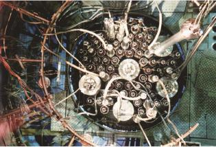
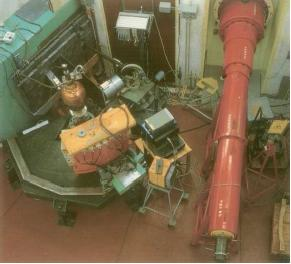

VNS provides technical and licensing support related to nuclear safety, through audits and assessments.
For new facilities such as ITER, VNS can review the conformity with the applicable safety requirements and to establish the safety assessments.
Virtual simulation tools for structural analysis, thermal management and flow optimization ensure a dedicated approach that results in products and systems with more performance and less risks.
VNS performs safety studies and assessments for:
- the protection of people and the environment against any hazards that may affect their safety, especially due to ionizing radiations
- the promotion and improvement of nuclear, radiological and industrial safety, including the development of know-how in these areas
For new facilities such as ITER and MYRRHA, VNS has the capacity to evaluate the applicable safety requirements and establish the SAR.
These activities can be exercised for the benefit of:
- Nuclear safety authorities
- Nuclear operators, utilities or manufacturers
Stress test assessment of waste interim storage facilities at Belgoprocess (Dessel BE)
Seismic assessment of the BR2 at SCK-CEN (Mol BE)
Risk assessment of irradiation and measurements experiments
Contact Person
Mr Sammy Shihab
email: sammy.shihab@vnsafety.eu
Tel: +32 2 528 01 11
Fax: +32 2 528 01 01
http://www.vnsafety.eu
Boulevard Paepsem 20
B- 1070 Brussels
Belgium